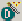
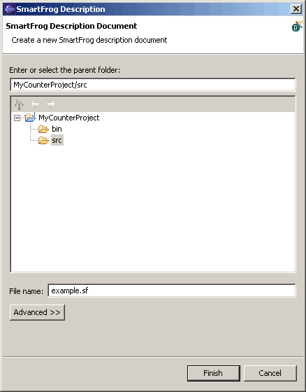
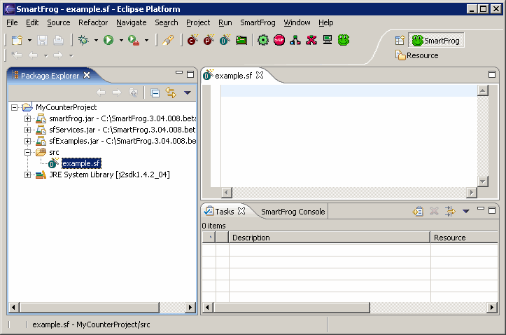
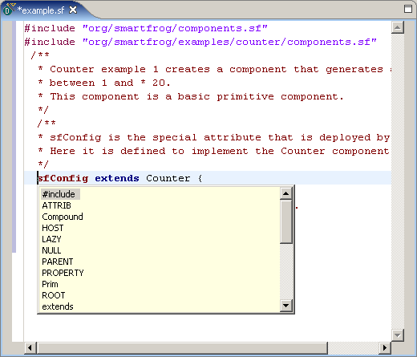

Creating a SmartFrog description file
General description
SmartFrog description files are used to describe component collections and
component configuration parameters. Components in this context are Java software
applications operating in a distributed environment. Component descriptions
include such things as where the component is running, how it is configured, its
lifecycle sequencing, and its relationship with other components. The
description files are written in a specialized language for description
notation.
How to create a SmartFrog description file
Purpose
To create a SmartFrog description file in an IDE that provides a specialized
editor that allows you to easily create and modify the file.
NOTE: In our example, we are using the example.sf file located in the SmartFrog_Install_Dir\src\org\smartfrog\examples\counter directory.
Procedure
- From the Eclipse menu bar, select File > New > SmartFrog
Description. Alternatively, you can select the
 icon from the SmartFrog Eclipse toolbar. Either method opens the following dialog where you can specify a parent folder and name
for your description file:

- Enter or select the parent folder for the file from the project tree displayed. In our example, we have selected the src directory.
-
In the File name: field, specify a name.
In our example, we have specified example.sf as the file name, which is the name that is used in the counter example.
- Click Finish. This opens the empty SF file in the editor
pane of the GUI.

-
Cut and paste the following code into the editor pane. As noted above, we are using the example.sf file located in the SmartFrog_Install_Dir\src\org\smartfrog\examples\counter directory. This description file specifies the value of the limit attribute, which is a variable in the Java component file that implements the counter application.
#include "org/smartfrog/components.sf"
#include "org/smartfrog/examples/counter/components.sf"
/**
* Counter example 1 creates a component that generates a counter
* between 1 and * 20.
* This component is a basic primitive component.
*/
/**
* sfConfig is the special attribute that is deployed by SFSystem.
* Here it is defined to implement the Counter component.
*/
sfConfig extends Counter {
/**
* Mandatory attribute "limit" is defined.
*/
limit 20;
};
Immediately, you will see the syntax coloring feature in the editor .
Other useful editor features are:
- the ability to define a section of code that you can expand and
collapse
- content assistance for SmartFrog description notation keywords
-
To define a code area that can
expand and collapse, also called a folding region, highlight the lines of code
you want in this region. Right-click in the editor, and select Define Folding
Region from its context menu.

This creates a triangle icon to the left of the defined region that allows you
to expand and collapse that portion of the code.
-
To use the content assist feature, position your cursor in the editor where you
want to add content and right-click. Select Content Assist from its
context menu. Alternatively, you can click CTRL-Space. This brings up the
following pop-up window with SmartFrog keywords that can be used when creating
description files.

-
To parse the description,
select the
on the SmartFrog Eclipse plug-in toolbar.
Refer to the
SmartFrog GUI Quick Reference Guide
for more information on how to use the SmartFrog GUI.
Summary
The SmartFrog Eclipse plug-in provides an editor with customized features that allows
you to easily create description files for your Java components using the same
IDE for both types of files.